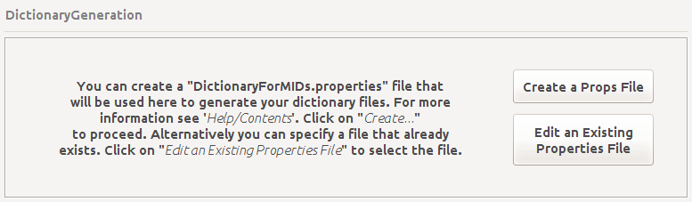
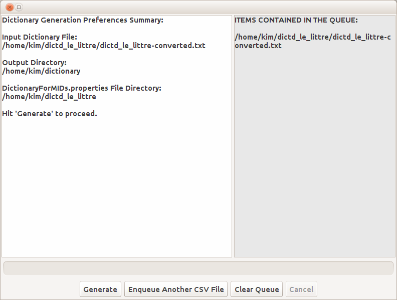

After converting the dictionary file into a CSV file, you have to generate the dictionary files
into the format of DictionaryForMIDs. For that, you have to use DictionaryGeneration. Note that
before generating the files, you have to create a properties file (DictionaryForMIDs.properties).
To create such file you can use just about any text editor, but it is far more convenient to use the
application 'PropertiesEditor' included in DictionaryForMIDs-Creator. PropertiesEditor makes it
very easy and pleasant to create a properties file. Almost everything is there written for you,
you just have to choose among comboboxes, lists, checkboxes etc. and PropertiesEditor will write
the final DictionaryForMIDs.properties file for you.

Hit the Create button to launch the PropertiesEditor window.
Hit the Edit an Existing... button to select a DictionaryForMIDs.properties file
and launch the PropertiesEditor to edit it and adapt it to another dictionary.
After creating a properties file you have to specify its location, the location of the destination
directory and the full path to the input CSV file (either converted by DictdToDictionaryForMIDs
or created directly from Microsoft Office's Excel or OpenOffice.org's Impress). After that,
hit the Generate Dictionary Files button. This will take you to the Dictionary Generation
Summary Window and will enable you to actually generate the dictionary files.
Below is a screen shot of the summary window. Hit the Generate button
to go on to the actual dictionary generation process. Note that this process might
take up to hours to complete; depending on the size of the input dictionary file.
